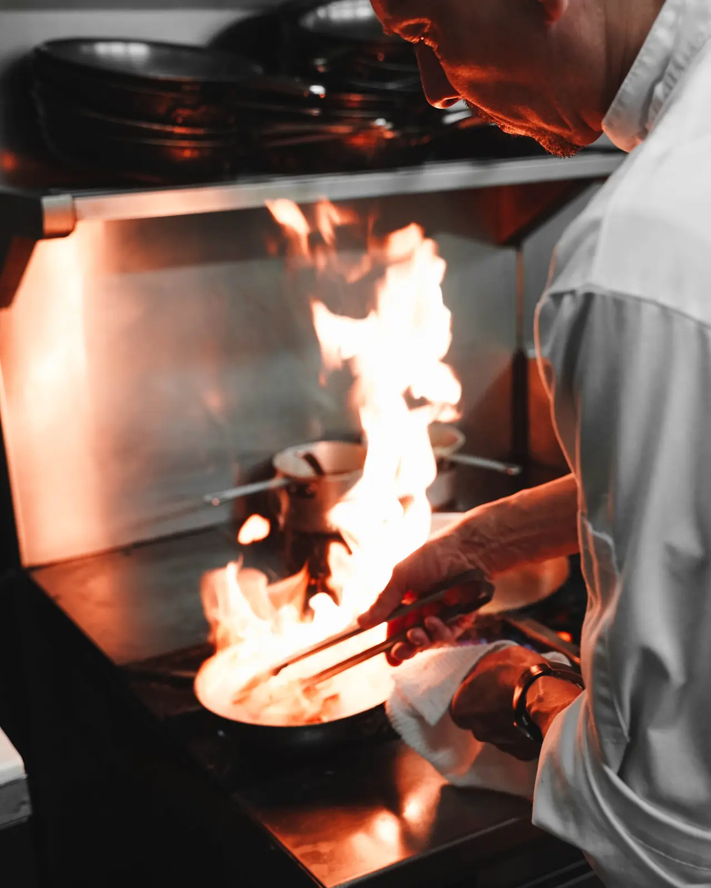
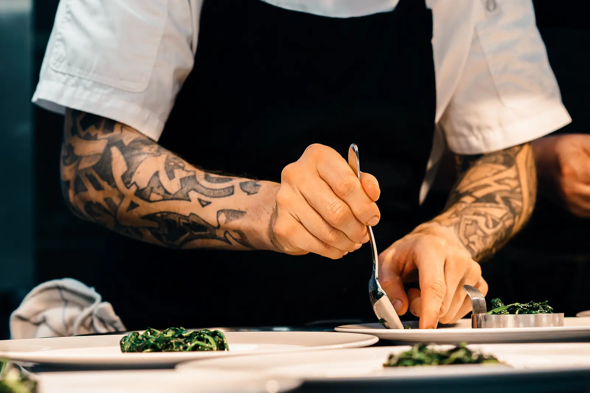
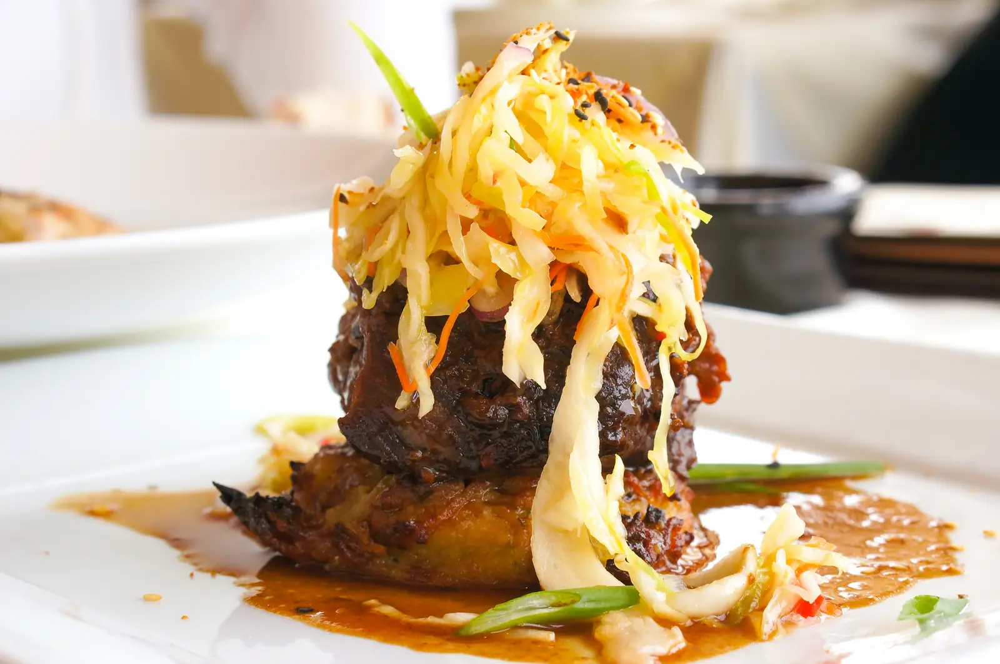
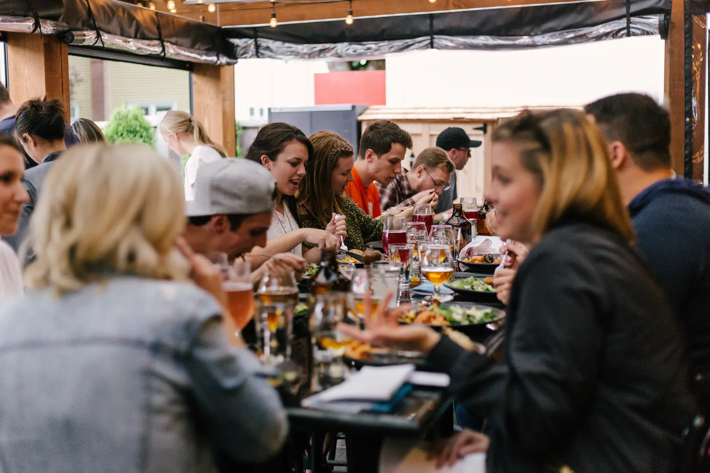
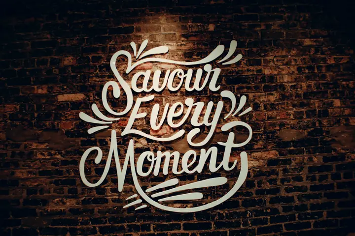
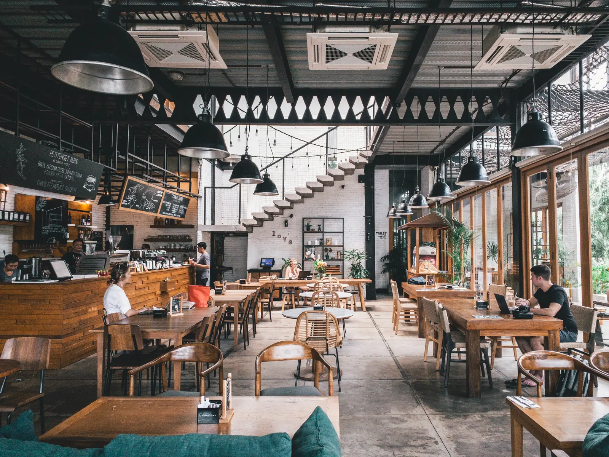

10:00 carvão aceso
Começa com fogo a sério.
Todas as casas cozinham a carvão. O mestre da grelha acende-o às dez e está pronto ao almoço. Nada da grelha passa pelo gás.
Aberto hoje até às 23:00 · Carvão aceso desde as 10:00
Fogo, mãos e uma mesa comprida. Quarenta cozinheiros de doze países a fazer hambúrgueres, grelha a carvão, sushi e marisco desde 2013.
10:00 carvão aceso
Todas as casas cozinham a carvão. O mestre da grelha acende-o às dez e está pronto ao almoço. Nada da grelha passa pelo gás.
12 países na cozinha
As receitas viajam entre as nossas casas. O frango à Zambeziana nasceu em Maputo, o caldo de ramen em Quioto, a paella com o João em Espanha.
4 min do passe à mesa
A chef Michelle Duvier prova cada molho antes do serviço e cada prato antes de sair. Se esperar, volta para trás.
180 lugares em Maputo
Partilhe, discuta pelo último pedaço, fique para mais uma rodada. As mesas compridas são a razão desta casa.
Reservar mesa



Cada uma tem a sua estação e os seus cozinheiros. Escolha uma, ou peça de todas de uma só vez.
Da chef

Primeiro pedido online
Use o código no pagamento. Um por cliente, em pedidos a partir de R150.
Venha jantar e acabe no bar. Acontece quase todas as noites.
Média de 4,8 em 2.140 avaliações

Av. Marginal 4120, Maputo
+258 84 300 4120